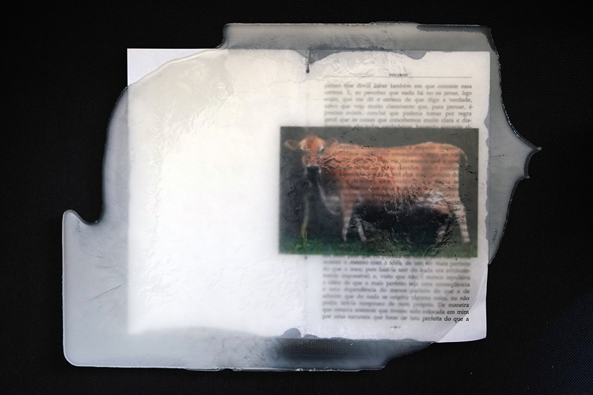

experimento descarte
Descarte, 2021
Experimento de impressão a laser sobre livro encapsulado em leite de natália e julieta

Videoperformance
Elípticas
(Subentendidas, implícitas
Ocultas)
Nos anos 80 Balinha morava no lote da vó Janda, era uma vaca gorda, tetuda, simpática, mansa & macia. Balinha era a jersey que dava o leite pra vó fazer comida, bolo, pudim, pão, queijo, pão de queijo, coalhada, nata, manteiga, iogurte. Atendia pelo nome, como se cadelinha fosse - dizia a tia, filha da vó, mãe dos moleques. Nunca se viu dar tanto leite por aqueles cantos! Balinha era uma lady, descendente da primeira leva de vacas da raça jersey vinda da granja Windsor, da Rainha Vitória, em 1896, do UK diretamente para o Rio Grande do Sul. Balinha não só dava de comer aos humanos do Nove, bairro onde vó Janda morava em Mafra, no planalto norte de Santa Catarina, como também dava enorme prazer ao vô. De tão mansa & macia, Balinha deflorou metade da molecada do bairro de uma rua só: faziam fila pra esmerdelhar o pau na vagina inglesa & quente de Balinha, que não podia escolher seus parceiros, mas era muito bem escolhida por eles. Balinha serviu muito e foi servida. Viveu 14 anos, teve 3 filhos cujos nome e paradeiro seguimos desconhecendo. Depois de morrer foi pro prato. O couro virou tapete. O corpo, ensopado. Do úbere ao útero, Balinha deu-se toda; por Balinha lambeu-se os beiços; de Balinha aproveitou-se tudo, inclusive a imagem do vô Jango olhando os netos com ódio, desprezo e vergonha enquanto erguia as calças e afivelava o cinto depois de meter em Balinha que uso nesse texto. É que vô Jango amava Balinha, amava tanto que nem se sabia aquela vaca gorda, tetuda, simpática, mansa, inglesa & macia de quem tomamos tudo, mas com muito amor.
Todas nós, de certo modo, nascemos de um estupro. O estupro é o modo patriarcal de existência e perpetuação da espécie humana na terra. Sem a cultura do estupro seríamos um povo com gente de menos, no entanto somos muites porque também somos filhes de estupro e carregamos em nossas corpas as marcas da violência generativa que colonizou úteros ao longo das narrativas que demarcam o espaço da via láctea na terra. Com Balinha não foi diferente, mas a sua experiência de estupro foi interespecífica: eram homens, meninos, garotos humanos munidos de pau que percorreram seu corpo, gozaram dentro dele, desfrutaram de seu buraco quente, manso, inglês & macio ao longo de seus demorados 15 anos.
No entanto, enquanto vaca leiteira cuja expectativa de vida pode chegar a 20 anos, Balinha até que pode ser considerada uma lactante de sorte: as que estão implicadas no sistema de produção industrial de leite precisam dar cria uma vez por ano e, de quebra, acabam vivendo em média de 6 a 9 anos, dependendo da sua capacidade produtiva e reprodutiva, podendo ser jogadas fora muito antes: 32% delas são descartadas por infertilidade, 18% por problemas locomotores e outros 18% por mastites e outras inflamações. Sim, descartes é mesmo o termo usado para dizer do fim de seu aproveitamento - qualquer semelhança com o filósofo é mera coincidência. Quando suas produções decaem elas também são sutilmente encaminhadas para a morte. Sutilmente, não, violentamente. Uma fêmea viva com baixa produtividade é cara demais para a indústria. Uma vaca que vive e que não produz e nem reproduz é uma vaca velha, seca, que não nos interessa mais: não dá lucro, não dá cria, consome água e comida, caga e ocupa espaço. Vacas velhas não merecem viver segundo a lógica agro. Em contrapartida suas crias até que merecem, mas também vão muito cedo ao abate. Bezerro bom é bezerro morto com até 6 meses de idade, de modo que nos ofereça a melhor e mais tenra carne de vitela jamais vista nas prateleiras dos açougues de luxo e supermercados gourmet. A vitela é a Lolita das carnes: corpo de criança, quanto mais jovem, mais macia, suculenta e ingenuamente deliciosa. Comer vitela é um segredo entre quem a prepara, quem a serve e quem a come: sobre o prato se parece com qualquer outro pedaço vermelho de carne, no entanto o aspecto de sua juventude macia, é uma intimidade desfrutada em segredo. Como diria Brecht: a carne nova comida com velhos garfos. Mas Balinha, essa sim foi uma vaca de sorte. O vô Jango era o menor dos problemas na vida de Balinha, pois se não fosse ele e o pedaço de terra sobre o qual ele a deixou pastar livremente, Balinha teria sido morta e não teria amamentado suas crias.
A história de Balinha se confunde com a história de muitas outras Balinhas vaquinas, humanas, extrahumanas, mamíferas e extramamíferas com as quais compartilhamos corpos, espíritos, tempos, espaços e parentescos. Como podemos esmiuçar o problema sexista que se estende às fêmeas bovinas, que passa por dar-se toda em sua invisibilidade até o seu total aniquilamento [descartes]? O caso dos touros Karvadi, Golias, Taj Mahal, Rastã, Checurupado, Godhavari, Padu e Akamasu, por exemplo, touros que foram os grandes representantes da segunda leva da raça Nelore a chegarem por aqui - a linhagem bovina que determina cerca de 80% do rebanho de gado de corte brasileiro hoje - nos ajuda a pensar. Ao contrário do sêmen pobre de vô Jango, que serviu pra fazer uns dois ou três filhos humanos, e também ao contrário do útero de tantas vacas anônimas, matrizes reprodutoras de machos gloriosos, o sêmen puro do touro nelore Karvadi era e ainda é a seiva dourada da pecuária brasileira. Mesmo depois de morto, uma dose raríssima do sêmen de Karvadi, um touro de impressionante conformação corporal, extraordinária qualidade racial, conservado pelas empresas de biotecnologia, chega a custar 30 mil reais nos dias de hoje.
Mas Karvadi, o alecrim dourado dos touros Nelore, também foi instrumentalizado pela indústria da carne - e do sêmen. O que parece uma história bonita, na verdade, é uma história que esconde muitos outros lados menos esplendorosos. Antes de vir para o Brasil, Karvadi era de propriedade de Shri Polavarapu Hanumaiah, da Vila de Karavadi, distrito de Prakasam em Andhra Pradesh, Índia. Tinha sido o campeão do First Andhra Pradesh Livestock Show, em Tenali, aos 25 de abril de 1959. Na ocasião José da Silva [Dico], capataz e representante do fazendeiro brasileiro Torres Homem Rodrigues da Cunha, chegou à cidade com a missão de encontrar um bom espécime de gado ongole, escolhendo o touro. A compra foi trabalhosa e o senhor Shri Polavarapu Hanumaiah não queria vendê-lo a este brasileiro, que precisou fazer um bem bolado com um outro brasileiro para arrebanhá-lo e trazê-lo à América do Sul. Foi Veríssimo Costa [Nenê] quem ajudou na missão. Foram ao todo um ano e nove meses para trazer Karvadi de Andhra Pradesh para o Brasil, tocando com seus quatro cascos o solo brasileiro no ano de 1962. Foram quatro anos de amadurecimento e reconhecimento de terreno até Karvadi passar a ser ordenhado para coleta de sêmen, aos 15 anos de vida.
O objetivo de sua vinda não poderia ser outro: melhorar a raça nelore no Brasil, colonizando úteras anônimas pasto adentro e afora para aperfeiçoamento genético de seus milhões de descendentes que pararam nos nossos pratos e provavelmente retornaram ao continente asiático em forma de premium steak. Karvadi hoje é tido como pai da raça Nelore no Brasil e estima-se que outros 80% do rebanho da raça aqui tenha a genética dele que, como todo imigrante instrumentalizado pela branquitude, não veio ao Brasil passar férias.
A chegança de Karvadi e de seus colegas ao Brasil fez com que eles se tornassem muito conhecidos, no entanto nunca nenhuma das vacas que também vieram, em momentos diferentes, para reproduzir esses touros famosos tem menção honrosa - ou sequer menção - na história da pecuária brasileira, muito menos nome próprio. São milhões os filhos bastardos do sêmen de um Karvadi que nunca teve a oportunidade de maternar, paridos e amamentados por vacas desimportantes para a agrológica que são. Esta é a expressão mais transparente da metafísica ocidental que privilegia o patriarca em detrimento de outras vidas. Só ele vale, tem nome e reconhecimento. Anonimato e invisibilização, aliás, são os denominadores comuns das vacas reprodutoras, chamadas de matrizes, que servem com seu útero ao sistema laticida, à carnificina de almas, como todas as vacas reprodutoras que, ao contrário desses touros, são tanto alvo da invisibilização patriarcal do corpo fêmeo quanto qualquer outra mulher ou corpo com útero que se presta única e exclusivamente ao trabalho reprodutivo instrumentalizado pela mão do homem da indústria. Como reescrever a história da naturalização reprodutora do corpo com útero e, ao mesmo tempo, questionar as noções de natureza e de mulher no seio da história do ocidente e, sobretudo, na história do pensamento ocidental, da filosofia, que contornou a sociedade nessas bases, nas bases de um pensamento que nasce às custas da escravidão e da exclusão de fêmeas e de filhotes na polis grega? Uma pergunta a ser respondida com muitas outras.
Karvadi & As Anônimas [um nome de banda?], no entanto, não foram os primeiros nelores a fazerem história no Brasil. E nem Anônima foi a primeira fêmea a chegar. Em 1878 vieram do zoológico de Hamburgo, na Alemanha, dois touros, Piron e Hanomet [que logo foi rebatizado de Maomé e teve de vir junto com seu tratador indiano, que se recusou a se separar do bicho-parente que ele cuidava desde bebê], e duas vacas: Gouconda e Pretoria [logo virou Vitória], trazidos pelos poderes do fazendeiro Manoel Lemgruber, que os transferiu à propriedade da família, em Sapucaia, no Rio de Janeiro. Nada se sabe de excepcional sobre Gouconda e Vitória, bem como nada se sabe - sequer o nome próprio - do parente humano de Maomé, sujeitas e sujeitos ocultos que deram-se e continuam se dando de todo ao agronegócio. Do pêlo ao nome, da carne ao sêmen, do úbere ao útero: toda fêmea é um pouco Balinha. Todo pobre é um pouco fêmea.